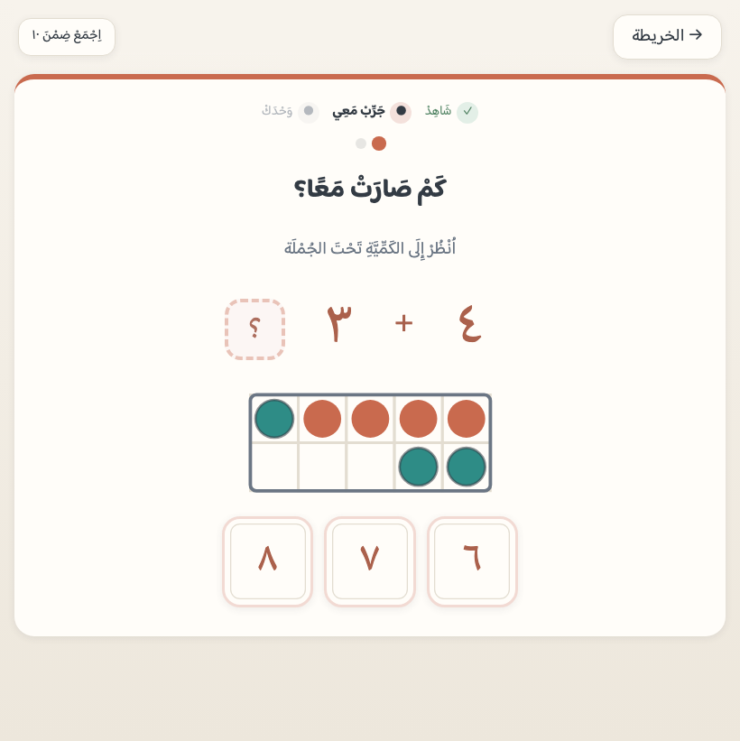
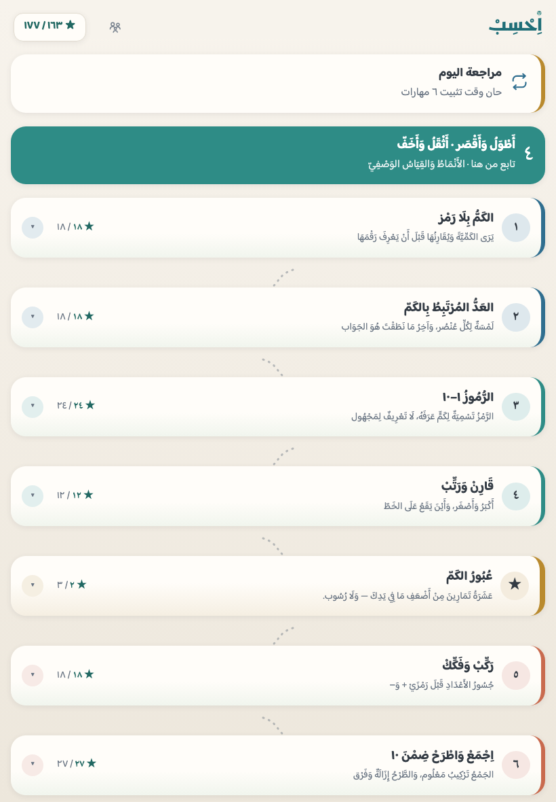
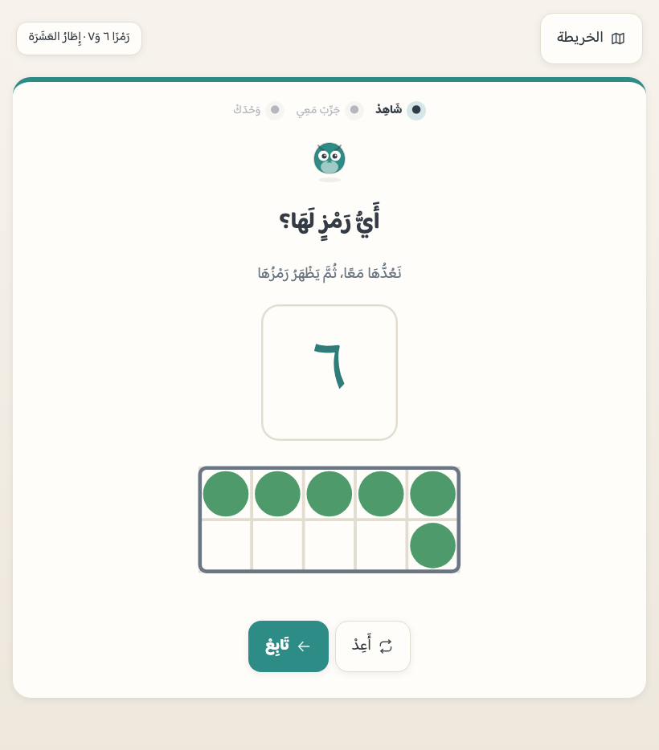
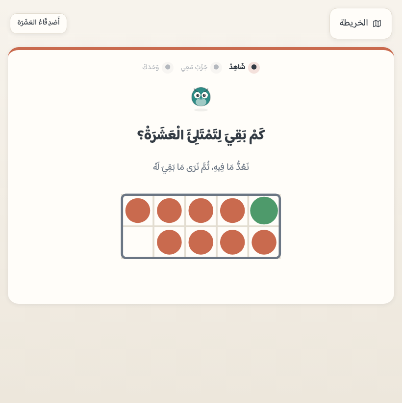

١ · افتح التطبيق
اضغط «ابدأ الآن» لتكون داخل التطبيق. وعلى الآيباد والآيفون افتحه في سفاري — التثبيت لا يعمل من متصفّحٍ آخر عليهما.
تطبيق ويب مجاني لطفل من أربع إلى سبع سنوات. يمشي على مسارات التعلّم في الرياضيات المبكرة: الكميةُ تُرى وتُعَدّ، ثم يُسمّى رمزُها، ثم تُبنى جسورُ الأعداد، ثم يجمع ويطرح — حتى العشرين. ولا يُعرض على الطفل عددٌ ولا عمليةٌ فوق ما بلغه في الطريق.
ابدأ الآن ←يفتح في المتصفّح مباشرة — بلا تنزيل، وبلا حساب، وبلا إعلانات.

«اِحْسِبْ» يُضاف إلى شاشة الجهاز بنقرتين — بلا متجر تطبيقات وبلا تنزيل. وليست خطوةً تجميلية: تقدّم طفلك محفوظ في جهازه هو، لا في حسابٍ عندنا ولا على خادم. وبالتثبيت يفتح بأيقونته بلا شريط متصفّح يشتّته، ويحفظ أصواته في الجهاز فيعمل في السيارة وفي صفٍّ بلا شبكة.
والتطبيق نفسُه يُرشدك: حين يُفتح من متصفّحٍ يظهر أعلاه شريطُ تثبيتٍ يعرف جهازَك — زرُّ «ثبّت الآن» بنقرةٍ واحدة حيث يتيحها النظام، وخطوتا سفاري على الآيباد والآيفون. والخطواتُ الأربع الآتية هي نفسُها إن أحببت فعلَها بيدك.
اضغط «ابدأ الآن» لتكون داخل التطبيق. وعلى الآيباد والآيفون افتحه في سفاري — التثبيت لا يعمل من متصفّحٍ آخر عليهما.
اضغط زرّ المشاركة في شريط سفاري — مربّعٌ يخرج منه سهمٌ إلى أعلى.
اختر «إضافة إلى الشاشة الرئيسية» ثم «إضافة».
تظهر أيقونة اِحْسِبْ بين تطبيقات الجهاز. افتحه منها مرّةً وهو متّصل بالإنترنت ودعه دقيقةً ليحفظ الأصوات، ثم يعمل بلا شبكة.
خطواتُ أندرويد والحاسوب، وكيف تتأكّد أنّ الأصوات اكتملت — في الدليل العملي.
وكلُّ واحدٍ منها يمكنك التحقق منه بنفسك، لأنّ برنامج فحصٍ يطبّقه على المحتوى قبل أن يصل إلى الطفل.
لا يرى الطفل رقماً واحداً في أوّل مرحلتين — يقدّر بنظرة، ويعدّ بلمسةٍ لكل عنصر، ويطابق كمّاً بكمّ. ثم يُكشَف الرمزُ فوق الكمية التي عدّها للتوّ، فيكون تسميةً لشيءٍ يعرفه لا تعريفاً لمجهول.
لكل محطةٍ جبهةٌ معلَنة (مداها وأشكالُها ورموزُ عملياتها)، وبرنامجُ فحصٍ يمرّ على كل جولةٍ يولّدها التطبيق ويرفض ما تجاوزها. فالطفلُ لا يقابل «+» قبل محطته، ولا عدداً فوق مداه — ليس وعداً بل فحصٌ يمرّ قبل النشر.
في التطبيق ٩٧ ملفَّ صوتٍ مسجَّلةً مسبقاً بصوتٍ واحد، استُمع إليها واحداً واحداً قبل نشرها. ولا ينطق التطبيق شيئاً بصوتٍ آليّ لحظيّ. والعدُّ فيه مجرَّدٌ: «واحد، اثنان، ثلاثة» — بلا معدودٍ يُقرن بعدد.
لا حساب، ولا تسجيل دخول، ولا إعلانات، ولا تتبّع. تقدّمُ الطفل في جهازه وحدَه، ولك أن تصدّره ملفاً وتستعيده. وبعد أوّل فتحةٍ متّصلة يعمل في السيارة وفي صفٍّ بلا شبكة.
يراه الطفل لعبةَ أعداد، وهو في حقيقته منهجٌ متدرّج. يلعب ثلاث إلى خمس دقائق في المحطة الواحدة، والتطبيق يسجّل كل تعثّرٍ ويعيده عليه في وقته.
لا يحتاج أن يقرأ ليستعمله: الصورةُ والصوتُ وموضعُ الزرّ تدلّه. الأزرار كبيرةٌ تناسب إصبعه، ولا مؤقّت ولا عدّ تنازلي ولا شاشة «خطأ». وإذا أخطأ تُعَدُّ الكميةُ أمامه ثم يحاول ثانية.
لوحةٌ خلف بوابةٍ بسيطة تقول بالكلام لا بالدرجات: ما الذي يفعله طفلك الآن، وما الذي يحتاج تثبيته، وكم دقيقةً تعلّم في كل يوم من الأسبوع. وفيها نسخةٌ احتياطية تحفظها بنفسك.
ترتيبٌ واضح يُدقَّق محطةً محطة، وقاعدةُ «لا عددَ فوق جبهته» يفرضها برنامجُ فحصٍ لا ذوقُ مؤلّف، وثلاثُ صفحاتٍ في هذا المرجع تبيّن كل محطةٍ وسببَ كل قرار.
فمِن لوحة وليّ الأمر — لا من شاشة الطفل — بابان اختياريان يفتحهما المعلّم أو الوالد متى شاء، ويغلقهما متى شاء. ومُغلَقين لا يتغيّر في التطبيق حرف: الرحلةُ هي هي، وقياسُ ما أتقنه هو هو.
طفلٌ يأتيك من مدرسةٍ أو مركزٍ وقد عدَّ وجمع لا يُحبَس في «كم ترى؟ ١–٢»: يمتحنه وليُّ أمره من اللوحة مرحلةً مرحلة بتمارين المراجعة نفسِها، فيقف عند أوّل تعثّرٍ وتبدأ رحلتُه من هناك. ويفتح ما أُثبت لا ما ادُّعي: العتبةُ عتبةُ بوّابات الإتقان نفسُها، ولكلِّ محطةٍ فيما يُفتَح سؤالٌ مضمون — فلا تُفتح محطةٌ لم يُسأل عنها. وكلُّ محاولةٍ تدخل صناديقَ المراجعة قياساً حقيقياً بلا وسمٍ خاصّ. وما فُتح لا يُغلق أبداً: النجمةُ الواحدة تفكّ القفل ولا تدّعي إتقاناً، والبواباتُ لا تُقفز.
لطفلٍ يحتاج وتيرةً أبطأ (صعوبةُ تعلّمٍ أو تشتّتُ انتباه): ٦ مقابضَ في اللوحة يُشغِّل منها ما شاء ويُطفئ ما شاء — «جرعةٌ أقصر» و«حوضٌ أضيق» و«تكرارٌ أقرب» و«صوتٌ أبطأ» و«هدوءٌ حسّي» و«عدٌّ أبطأ». و«عدٌّ أبطأ» مقبضُنا وحدَنا (فاصلُ العدّ): حين تُعَدُّ الكميةُ أمامه يتّسع الفاصلُ بين عنصرٍ وعنصر — العددُ هو هو والمهلةُ أوسع. ولا يُحتسب ما أُعين عليه إتقاناً، وما يمسّ القياسَ من هذه المقابض يُعطَّل داخل البوابات وامتحان اللحاق — مسطرةٌ واحدة للجميع. ويعرفه المعلّم بنظرة: خطٌّ أخضر تحت شارة الشريط ما دام مشتغلاً — بلا كلمةٍ تَسِمُ الطفل.
وحدُّهما مكتوبٌ لا مسكوتٌ عنه — وهو هنا بنصّه في لوحة وليّ الأمر حرفاً بحرف: وضعُ الدعم يعاير إيقاعَ التطبيق: جرعةٌ أقصر، وحوضُ اختيارٍ أضيق، وعدٌّ وصوتٌ أبطأ، وحركةٌ أهدأ، وتكرارٌ أقرب. وهو لا يشخّص ولا يعالج ولا يحكم على طفلك، ولا يَعِد بقدرِ أثرٍ في التعلّم، ولا يخدم الكفيفَ ولا الأصمَّ ولا غيرَ الناطق — فالتطبيق يعتمد على العين والأذن معاً. والمادّةُ لا تتغيّر بحرف: المحطاتُ نفسُها والأسئلةُ نفسُها، والإيقاعُ وحدَه هو الذي يتّسع. ولا نَعِد بحجم أثر: لم يُقَس أثرُ ما نصنعه بعد، وهو اليوم في تجربةٍ ميدانية. والتفصيل في الدليل العملي.
دربٌ واحد متّصل، والتالي مقفلٌ حتى يُتمّ الذي قبله. واللقطات أدناه من التطبيق نفسه لا رسومَ عرضٍ — تُلتقط آلياً من شاشاته.




هذه الصفحة بوّابة. وما وراءها مرجعٌ يُدقَّق: كلُّ محطةٍ بميكانيكيتها، وكل قرارٍ بسببه، وكل أداةٍ بطريقة استعمالها.
٧١ محطة في ١١ مراحل: ماذا يتعلّم الطفل في كلٍّ، وكيف يعمل تمرينُها، وما دورُك أنت. وتُطبَع ورقةً تُسلَّم لمدرسة.
مسارات التعلّم، والتقدير الفوريّ قبل العدّ، والجسور قبل العمليات، وقرارُ الأرقام المشرقية، وقرارُ العدّ المجرد — وأسبابُ قراراتنا وحدودُ ما لا يفعله التطبيق.
كيف تكون الجلسة، وكيف تُقرأ لوحةُ وليّ الأمر، وكيف تجرّب التطبيق من أوله، والتثبيتُ وحفظُ التقدّم واستعادتُه.